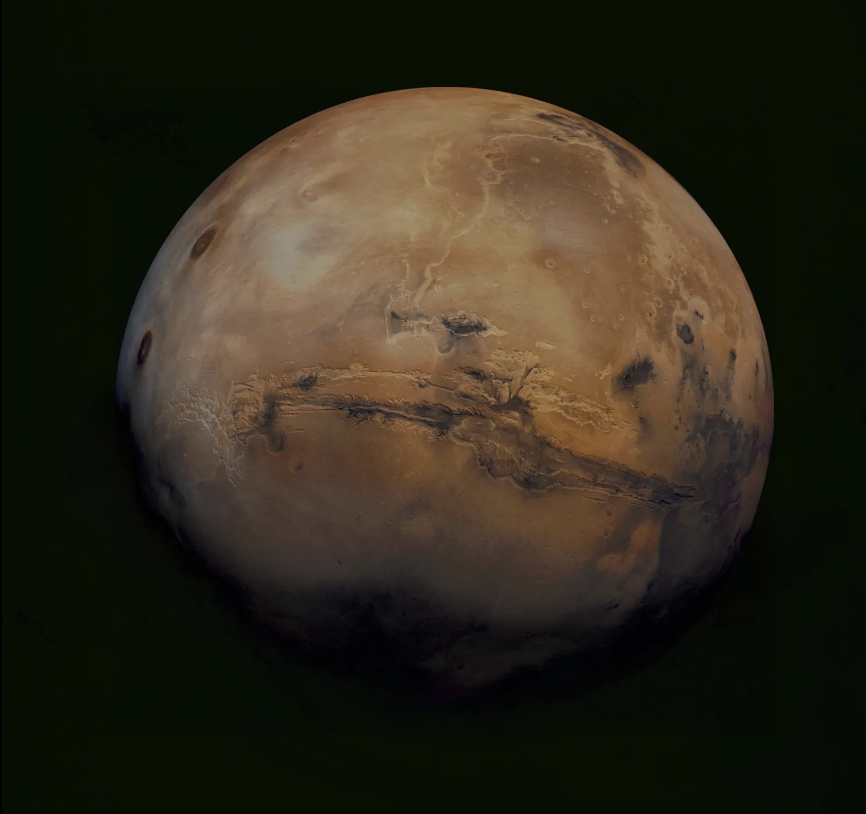
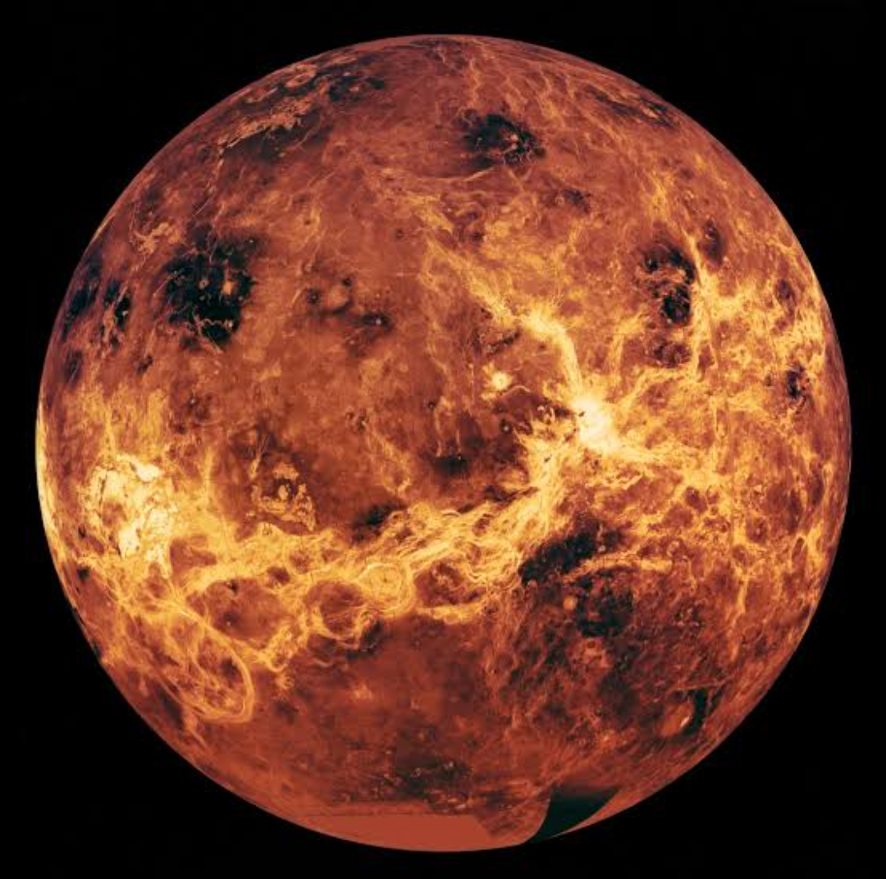
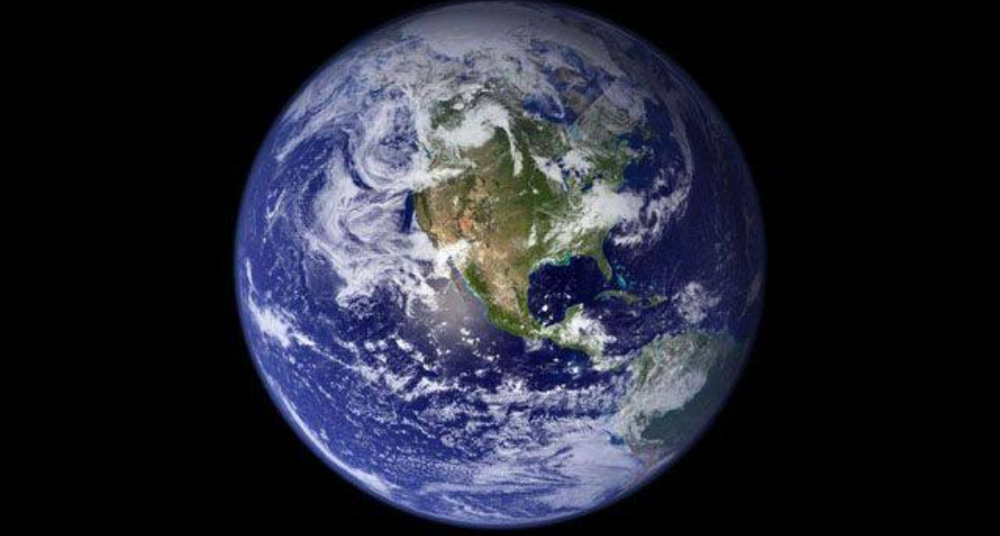

The Inner Planets
Mercury, Venus, Earth, and Mars are the planets closest to the Sun.
Mercury
Mercury is the closest and hottest planet.With an average distance of 0.387 AU or 5.79 x 10*7 KM. It takes 88 Earth days to orbit the sun, and rotates very slowly at a rate of 1 rotation every 58.7 Earth days.
Venus
Venus is the hottest planet due to its thick atmosphere.Venus is the nearest planet to Earth and the two are very similar in size and mass. And yet the two world's couldn't be more different.
Earth
Earth is the only planet known to support life.Earth, Our home, is third planets from the sun. While scientists continu to hunt for clues of life beyond Earth, our home planet remains the only place in the universe where we've ever identified living organisms.
Mars
Mars is known as the Red Planet and is a target for future human exploration.